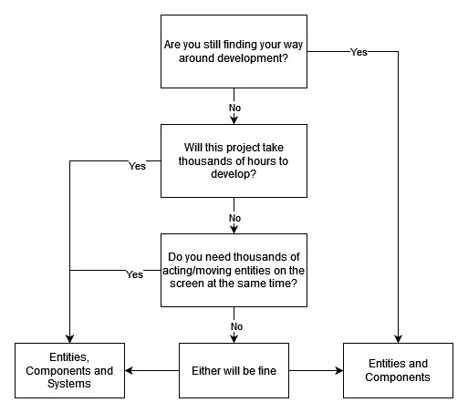

ECS (Entity Component System) Introduction
Problem
Dogis a subclass ofAnimal.
This example is often used as an example of inheritance in introductions to programming. However, when things get more complex, we get problems:
DogandFishcan swim, so we createSwimmingAnimalas a class in betweenBeeandBirdcan fly, so we createFlyingAnimal- What do we now do with the
Duck, who can do both?
We have the exact same problem in video games. Enemies can walk, shoot, fly - but not all of them can do everything. Even something basic like hitpoints is not universal, as some enemies are indestructible.
Solution
Entity component system (ECS) is a software architectural pattern mostly used in video game development for the representation of game world objects. An ECS comprises entities composed from components of data, with systems which operate on entities' components.
-Wikipedia
The general idea of an ECS is that an entity - an "object" in your virtual world - does not really do anything. It is mostly just a "bag of components".
The selection of components on an entity decides what it does. An entity with a collider component can collide, an entity with a sound component can make a noise, etc.
Differing opinions
For the "System" part of the term, there are two interpretations:
- Entity-and-Component System: In this setup, the components contain both the data they need and the functionality that works with that data.
- Entity, Component, System: In this arrangement, a component only contains data, while a third part - the system - contains the functionality.
Stride allows for working in both ways. 1) can be achieved by using scripts while the usage of 2) is described in this section of the manual.
Which one to choose?
